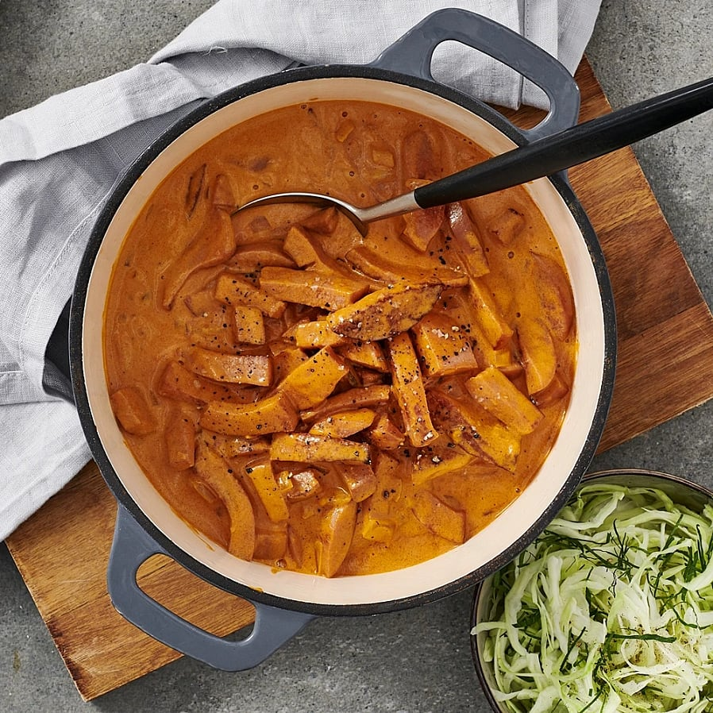

Ingredienser
- lök
- falukorv
- tomatpuré
- krossade tomater
- grädde
- vitpeppar
- salt
Hur tillagar vi?
- Stek korven, blanda i kryddorna och tomatpuré.
- Häll sedan i krossade tomater och grädden, och låt puttra en stund.
- Smaka av och krydda efter smak
- Servera med kokt ris
